This document brings together how I think, how I work, and two projects that show how I connect strategy, design and technology from start to finish.
I’m a multidisciplinary professional. I like being involved in every stage of a project: from concept and planning to design, development and final production.
My profile combines creative thinking, visual sensitivity and technical understanding. It isn’t about doing a little of everything; it’s about understanding how the parts of a digital product fit together and helping build it end to end.
Each discipline brings a different lens to the same goal: building a digital product that works, communicates and can grow.
The value isn’t in each area on its own but in the connections: an architecture decision changes an interface; a brand decision changes a flow; a new tool changes how things get made.
It isn’t a straight line. Experimenting can send a project back to design; evolving opens a new round of exploration. Each loop leaves the product clearer and sturdier.
How a complete digital product gets built: from a brand with a strong identity to a store, a purchase journey and a management panel, with each discipline feeding the next.
GXK is a clothing brand with a wide catalogue, high turnover and small stock: around 2–3 units per variant. Today it sells mainly through Instagram.
Its essence fits in one line: “a space for exploration and transformation through clothing”. Slogan: NO TE CONFORMES. TRANSFORMATE. (“Don’t settle. Transform.”)
Centralise operations in an owned store and give the team a private panel to manage catalogue, stock, photos and orders without technical knowledge.
The opportunity: a store that doesn’t feel like generic e-commerce, but like “the door to the GXK house”.
I define product, scope, architecture and visual direction, and approve every design. Implementation is carried out with AI agents (Claude Code) on decisions that are already approved, in isolated branches, with tests and review before anything is merged.
Figma → approval → implementation → QA
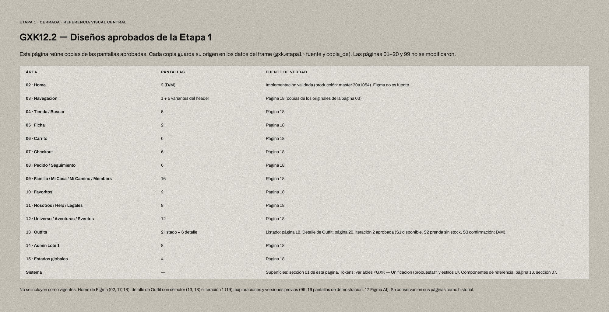
First came the Brand & E-commerce Bible: essence, voice, product rules, stock, payments, delivery and returns. Then the Visual Direction translated that identity into rules. The hierarchy is explicit: the Bible defines what GXK is; the visual direction defines how it looks.
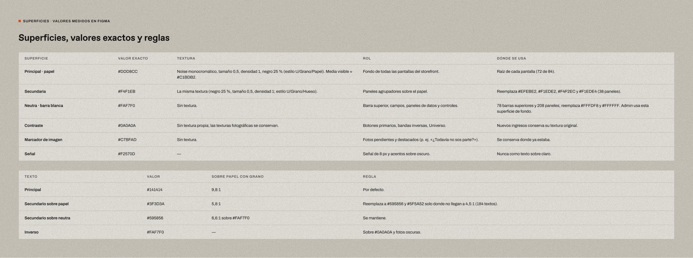
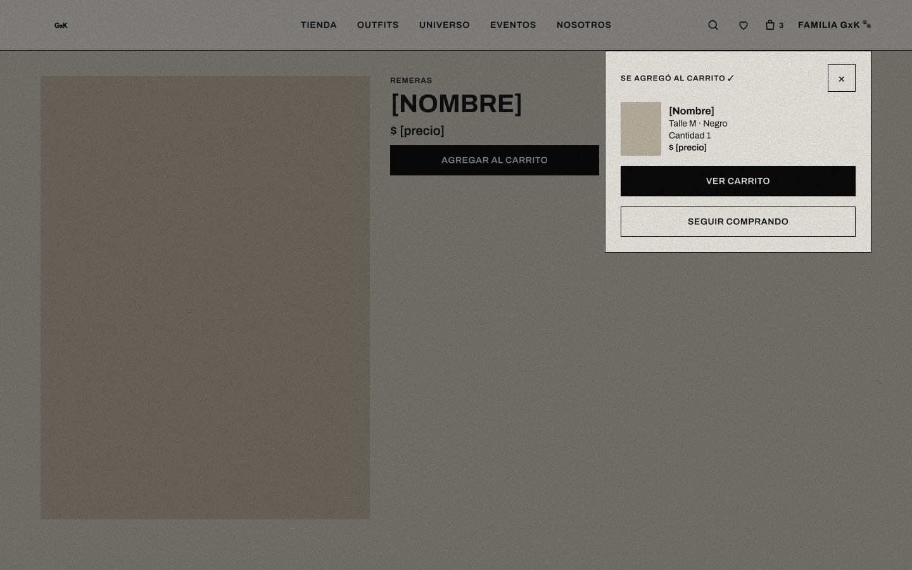
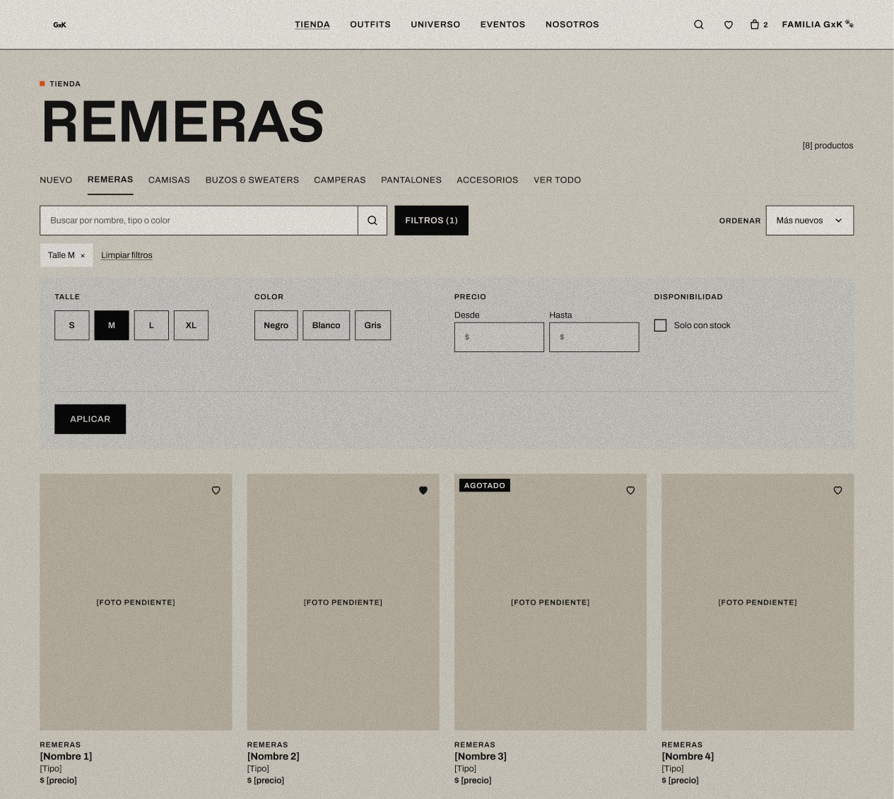
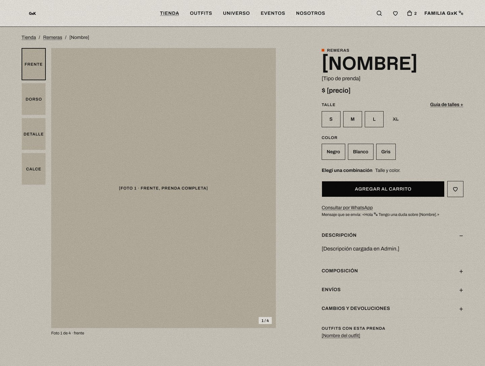
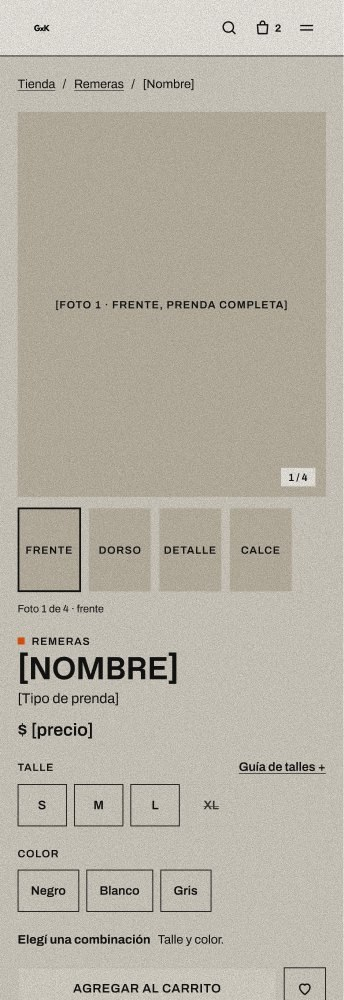
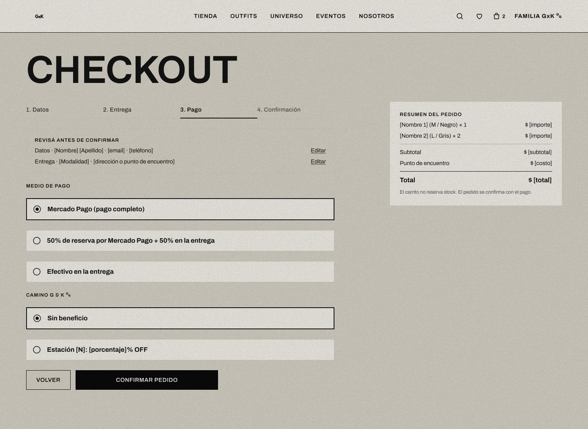
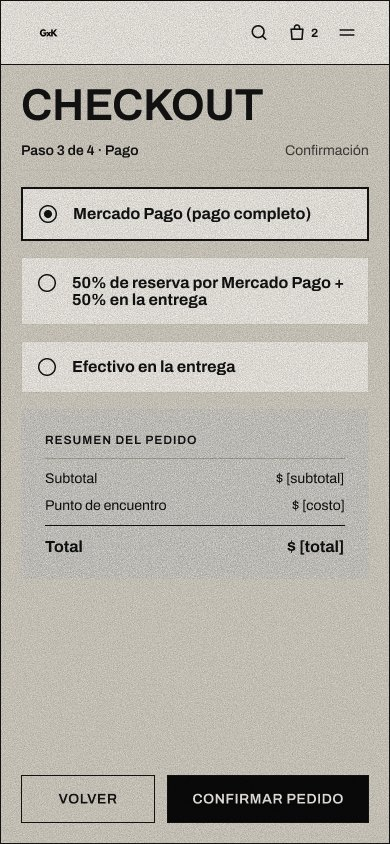
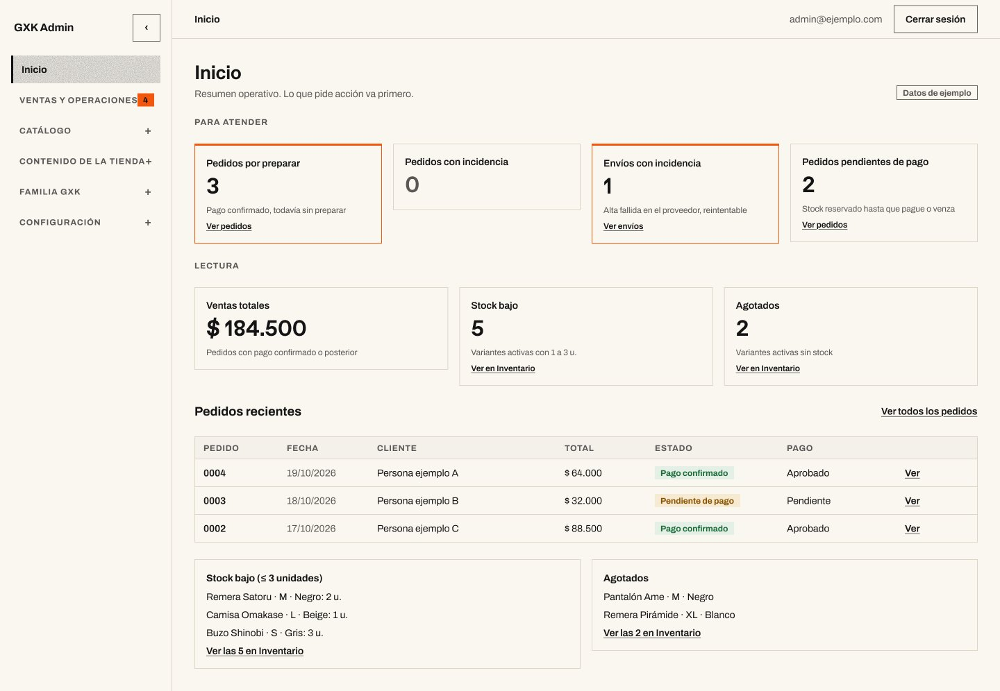
| Stock per variant | Product + size + colour with a uniqueness constraint. The product holds no total stock. |
| Orders as snapshots | Each item stores name, variant, SKU and price at the moment of purchase. |
| Tracking without an account | Order access via an unpredictable token; only its hash is stored. |
| Server-confirmed payment | Status depends on Mercado Pago’s webhook, not on the browser redirect. |
| Decoupled providers | Andreani and Correo Argentino sit behind adapters: they can be added or swapped without touching the core. |
| Approved | Design · Stage 1 | Approved designs consolidated in Figma: 14 areas on desktop and mobile, from store to Admin, including error and loading states. |
| Implemented | Home | On the repository’s main branch; the implementation is the Home’s source of truth. |
| On branch | Purchase and content | Checkout, order status, content and account pages, and cart availability logic: implemented on working branches, not yet merged or published. |
| Pending | Live integrations | Mercado Pago and shipping in production; the Andreani and Correo Argentino adapters don’t make live calls yet. Email provider to be defined. |
| Next | Beta | Full QA and a presentation beta for GXK’s owner (target: 30 Nov 2026); then a commercial beta and launch. |
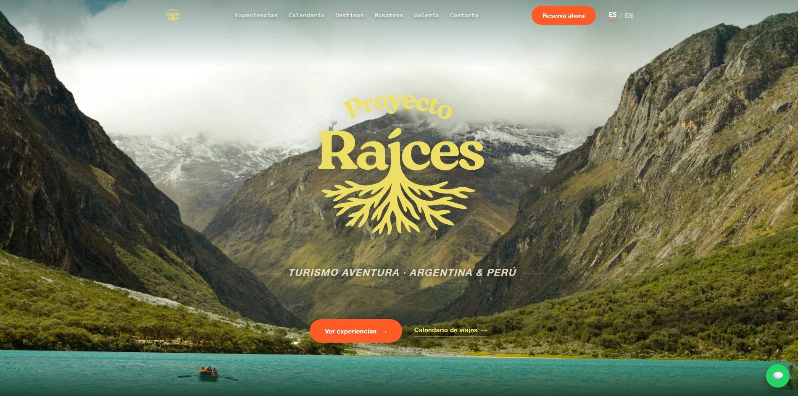
“Journeys to connect with every place.” The evolution of a digital platform: from a working site to a system ready to grow. proyectoraices.com.ar
Proyecto Raíces offers tours, treks and packages in Argentina and Peru that combine nature, adventure, culture and encounters, far from the traditional agency model.
A website that feels like a proposal of experiences rather than a generic agency: photography and storytelling working together, clear navigation and a simple path to ask and book.
It was also the project where I validated my working method.
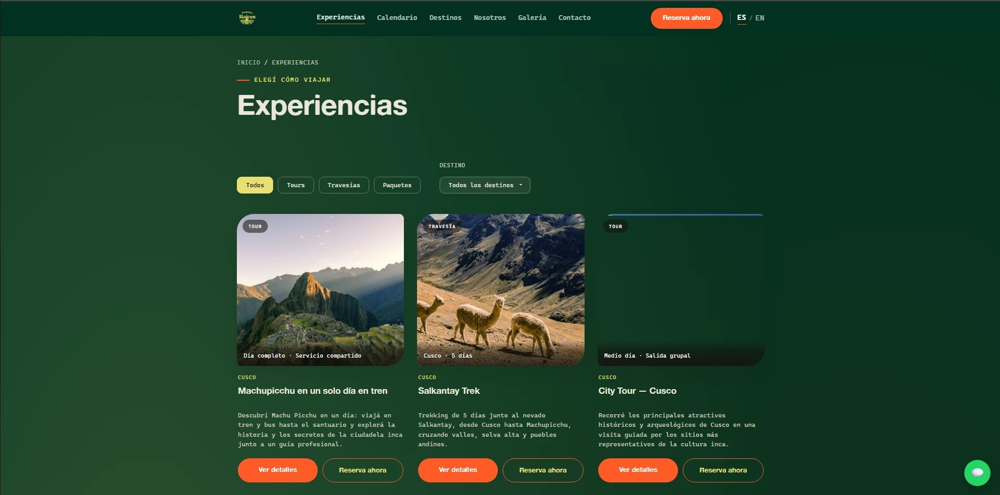
A visual DNA was distilled from a reference library: colour, type, photography, composition, navigation, graphic resources and motion. It isn’t a page: it’s a set of rules for building a Raíces of its own.
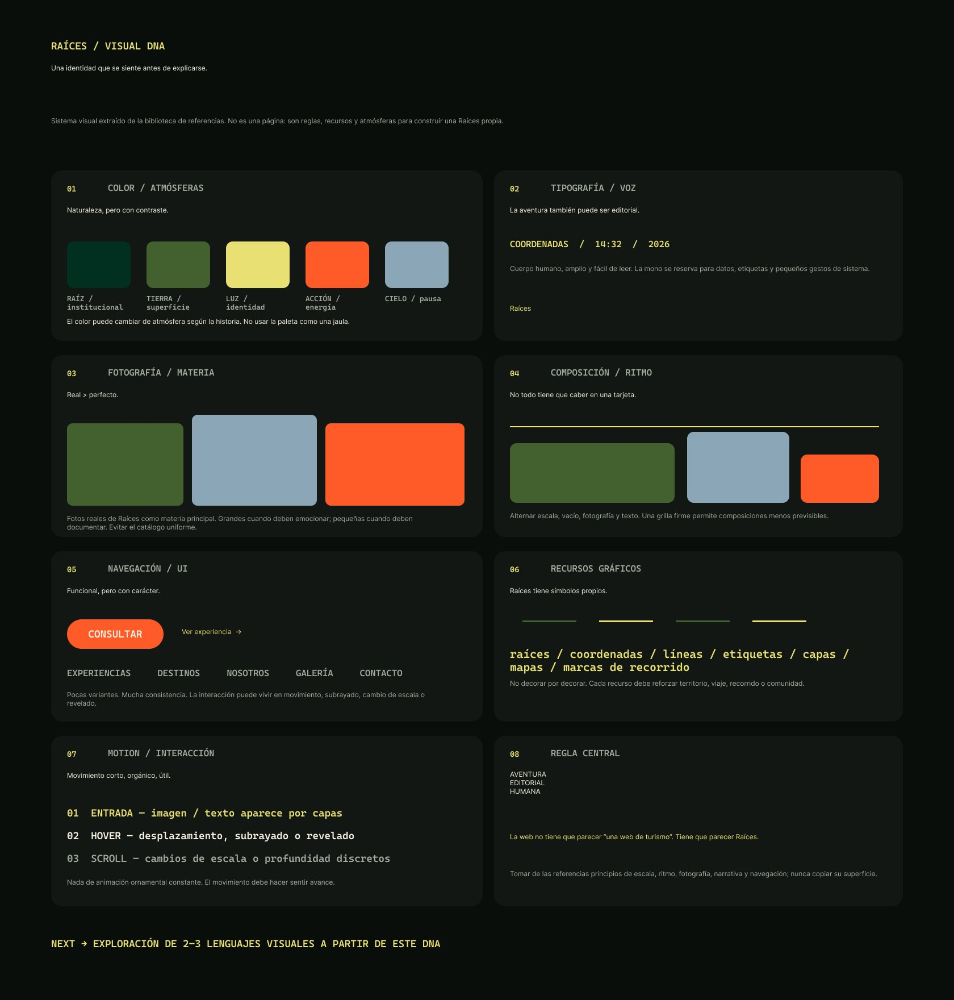
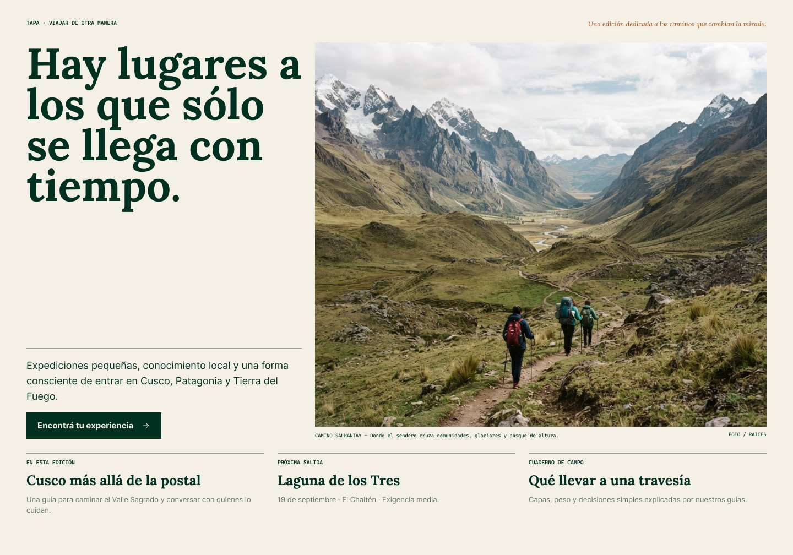
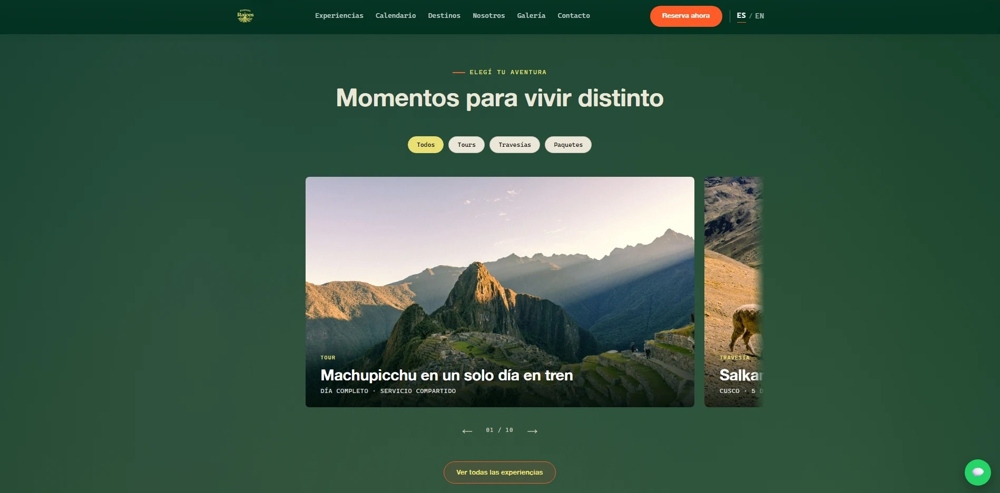
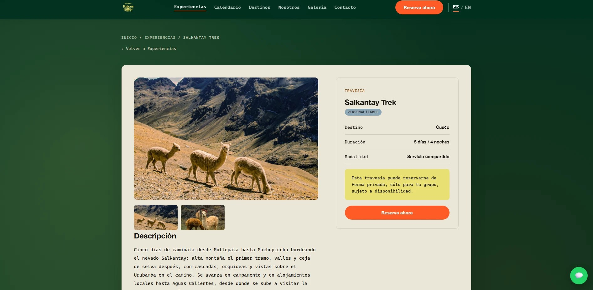
Experimentation doesn’t live apart: it shows up inside the projects —six directions for one Home, a visual-rules lab, interaction prototypes— and in the way I work.
Each group covers part of the work: imagining and producing, organising, understanding data, modelling systems and extending the process with AI. They’re combined as each project requires.
I’m open to full-time roles, freelance projects and creative collaborations. If you have a project where design and technology need to speak the same language, I’d love to hear about it.